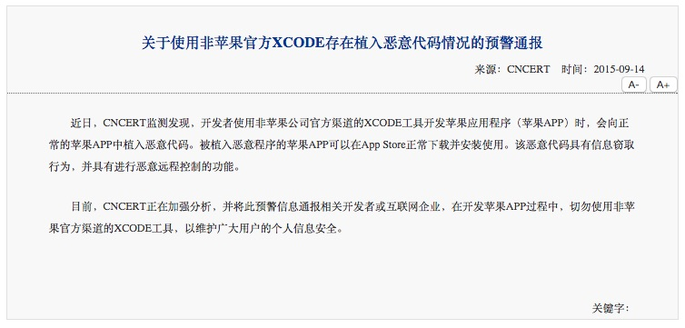
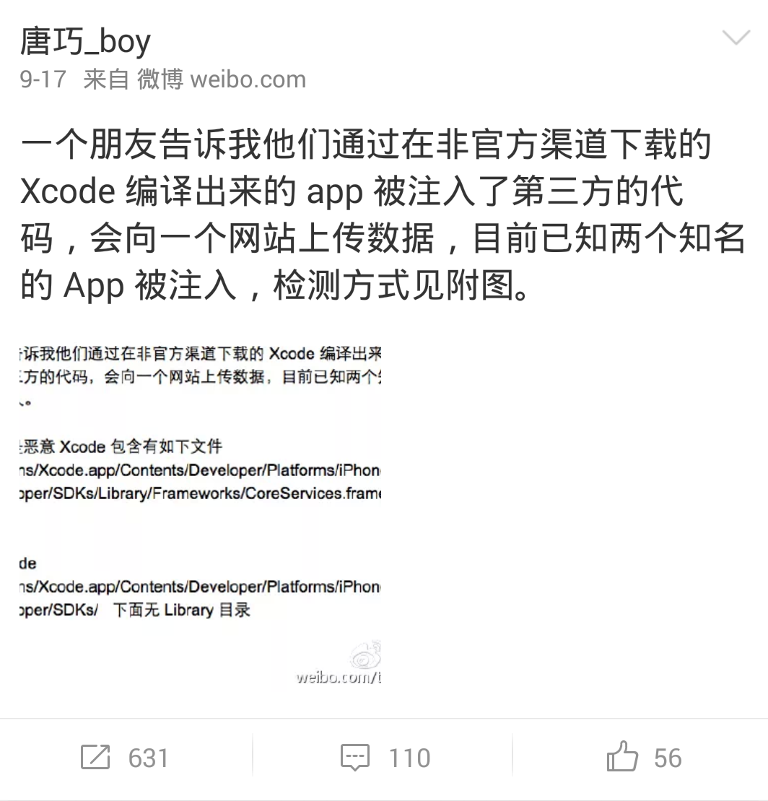
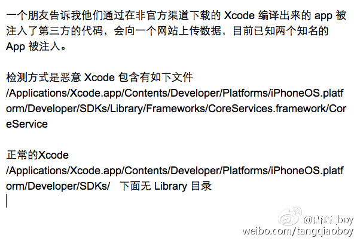
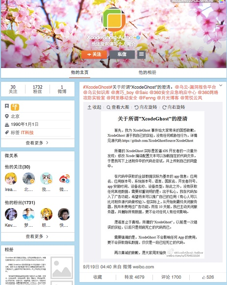
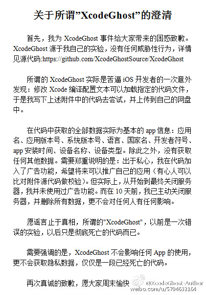
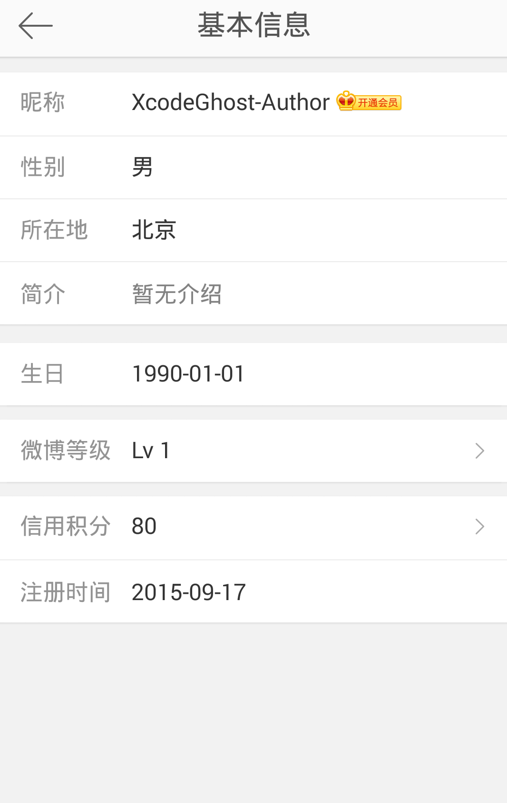
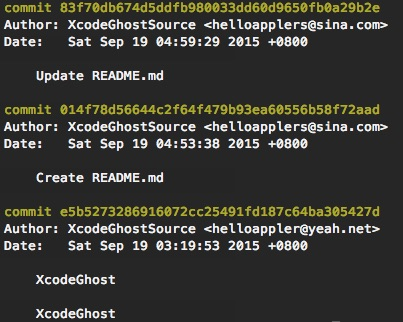
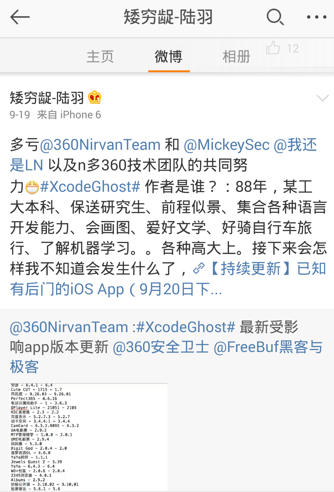
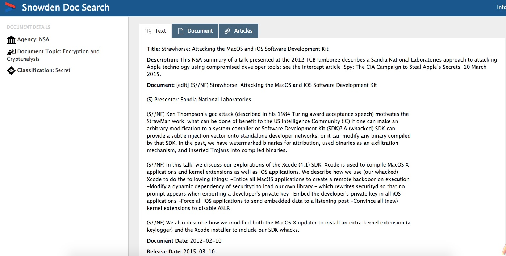
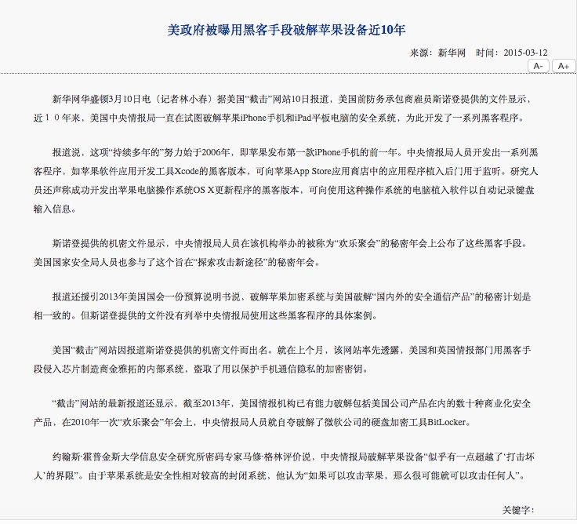

XcodeGhost笔记
关于发生在2015年9月份的XcodeGhost大规模感染事件资料记录。
语言版本: 中
发布日期：2015-09-22
更新日期：2015-09-22
作者：lngost
1. 事件回顾
* 2015年9月14日，国家互联网应急中心发布预警。
* 2015年9月16日，腾讯安全响应中心称，「发现 App Store上的 TOP5000 应用有 76 款被感染，于是我们向苹果官方及大部分受影响的厂商同步了这一情况。」
* 2015年9月17日09:45分，新浪微博名为@唐巧_boy的用户发布了一条动态，称其朋友从非官方渠道下载的Xcode所编译出来的app被注入了第三方代码，会向一个网站上传用户数据，并且已发现2个知名的app被注入。
(从此时开始，XcodeGhost事件快速升温)
 * 2015年9月17日下午，乌云知识库、以及国外安全公司palo alto相继发布初步分析报告。
乌云知识库: Xcode编译器里有鬼 – XcodeGhost样本分析
palo alto: NOVEL MALWARE XCODEGHOST MODIFIES XCODE, INFECTS APPLE IOS APPS AND HITS APP STORE
(从字里行间看，palo alto似乎与国内安全团队有合作，因而较早地知晓了此事，从Google搜索中也可看出很多英文网站在报道XcodeGhost事件时，也引用了palo alto的报告)
* 2015年9月18日，一部分受感染的app名单被公布，许多知名app中招。
* 2015年9月18日下午至晚上，一些app开发商发布声明确认受到影响，声明中显示目前攻击者的服务器已经关闭。
* 2015年9月18日晚上，陆续有对于XcodeGhost的分析文章发布，文章列表参阅附录A。
* 2015年9月19日凌晨04:40分，有微博名为@XcodeGhost-Author的作者发布微博声明，自称是XcodeGhost作者，说此次事件只是一次实验而已，说并没有做过分的事情，并在github上放出了相关源代码。
 (注1：仔细查看该微博后，发现一些细节问题，比如注册时间、30个关注等，详见附录B)
(注2：似乎在2015年9月19日凌晨3点多时，作者身份被初步挖掘出来并在微博上发布，详见附录B)
GitHub上放出的源码: https://github.com/XcodeGhostSource/XcodeGhost (注册时间为2015年9月19日)
* 之后苹果公司对受感染应用下架。同时，不断有最新分析报告逐一出炉，详见附录A。
(事件回顾 完)
附录A：搜集的各种分析报告、资料一览表
* 关于使用非苹果官方XCODE存在植入恶意代码情况的预警通报
* Xcode编译器里有鬼 – XcodeGhost样本分析 _ WooYun知识库
* 你以为这就是全部了？我们来告诉你完整的XCodeGhost事件
* NOVEL MALWARE XCODEGHOST MODIFIES XCODE, INFECTS APPLE IOS APPS AND HITS APP STORE
* Malware XcodeGhost Infects 39 iOS Apps, Including WeChat, Affecting Hundreds of Millions of Users
* Update: XcodeGhost Attacker Can Phish Passwords and Open URLs through Infected Apps
* 迷雾重重：XcodeGhost究竟是恶意病毒还是“无害的实验”？
* FAQ: Everything you need to know about the XcodeGhost App Store hack
* Apple's App Store infected with XcodeGhost malware in China
附录B：微博账户分析、git log查看、疑似作者身份被曝光
* 微博账户分析
* 第一张图，注册日期为2015年9月17日，正是XcodeGhost事件快速升温的当天。
* 第二张图，某网站报道时给出的手机截图，可看出手机时间为10:01分，微博显示5小时前该作者发布微博。根据网络报道，作者发布微博时间是在2015年9月19日凌晨04:40。
* 还是第二张图，作者@了几个微博，除了@唐巧_boy(事件升温的开始)、@Saic(9月18日发布了文章《XcodeGhost 实际用途猜测分析》)、和一些安全团队的微博之外，还@了3个知名博主，据悉这3名博主均有相应的IT背景。
* 还是第二张图，微博封面不一致？(更新：微博的封面虽然不一样，但是目前已知手机微博默认封面与网页微博默认封面确实不一致，且截至2015年9月21日这2处平台微博封面并没有变化，因此本条可忽略。)
* 还是第二张图，可以看出其关注了30个微博，其中有IT类、资讯类、娱乐类等等，以下为这30个微博列表。

* 结合以上资料，是否可以进行如下推测：
2015年9月17日XcodeGhost事件升温后，作者于当天注册了一个微博账号，并关注了以上30个微博来获取一定的信息；
由于微博名称是可以更改的，至于作者是否在注册时就是用了@XcodeGhost-Author这个名字、还是之后改的，尚无法确定；
可以确定的是，作者确实也同时在关注这件事情在网络上的发展，所以他知道@唐巧_boy和@Saic；
至于作者在最初是否就有意公开源代码，尚不明确，理由是虽然微博于9月17日注册，但github是在9月19日注册的，与其正式公布澄清为同一天；
并且在2015年9月19日凌晨3点左右，有人公布了疑似作者的信息；之后在4点40分时，XcodeGhost作者就发布了澄清，这两者之间是否有联系？
疑问在于，为何在微博上关注了2天后才开始澄清？又为何在他人公布了疑似作者信息后，XcodeGhost作者就立刻公布澄清呢？原因尚不明确。
* git log 记录
从其公布的源码中记录的 git log 来看，也是在2015年9月19日凌晨那段时间才commit的。
(可以注意到其使用了不同的邮箱账户；另外也需注意，git log的时间是根据机器本地时间记录的，因此时间上可以被伪造)
* 疑似作者身份被曝光：
2015年9月19日凌晨3点左右，有人曝出疑似作者的部分信息，如下图：
附录C：斯诺登释出的有关Xcode后门植入的文件
* 维基解密(WikiLeaks)于2015年3月10日公开了一份由斯诺登(Edward Snowden)提供的文件；
* 文件内容中包含CIA用Xcode的修改版本向苹果App Store中的应用植入后门的研究成果，同时NSA也参与其中。
* 国家互联网应急中心也曾发布过相应的报道，下图：
附录D：被公布的XcodeGhost源代码文件
* GitHub地址: https://github.com/XcodeGhostSource/XcodeGhost
* 本地下载: XcodeGhost.tar.gz